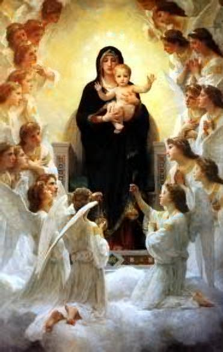
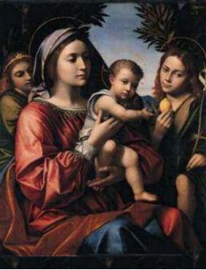

- JOS�,
MARIA e JESUS, receberam a
visita dos tr�s Reis Magos que vieram do Oriente, orientados por
uma estrela do SENHOR, para adorar o
MENINO-DEUS.
- JOS�,
MARIA e JESUS, receberam a
visita dos tr�s Reis Magos que vieram do Oriente, orientados por
uma estrela do SENHOR, para adorar o
MENINO-DEUS.
Os Magos eram homens versados em ci�ncias naturais, especialmente em astrologia. Por esse motivo, souberam encontrar a estrela de DEUS e seguiram o seu caminho. Gaspar, Baltasar e Melquior trouxeram presentes para o MENINO-JESUS: um deposito com ouro, em homenagem � sua realeza, incenso em honra � sua Divindade, e mirra em respeito e em devo��o � sua humanidade.
Herodes Magno, Governador da Jud�ia, ao saber pelos escribas e s�bios da corte, da presen�a dos orientais e que o "Rei dos Judeus" segundo a Escritura Sagrada nasceria em Bel�m, ficou com ci�mes e em sua mente doentia nasceu o medo de perder o poder. Perverso e de m� �ndole, planejou matar JESUS. Convidou os Magos � visit�-lo e ensinou-lhes o caminho para Bel�m, fazendo-lhes uma solicita��o: "quando retornassem, deixassem com ele o endere�o do MENINO, porque ele tamb�m desejaria ador�-LO." Entretanto, depois que estiveram com a Sagrada Fam�lia, os Magos foram avisados em sonho pelo Anjo do SENHOR sobre as inten��es de Herodes e por isso, retornaram � sua p�tria pela estrada de Hebron, n�o voltando a Jerusal�m para informar ao terr�vel governante, onde estava o MENINO-DEUS.
Da mesma maneira, a Sagrada Fam�lia tamb�m foi avisada em sonho, que Herodes mandaria uma guarni��o militar a Bel�m para eliminar JESUS. Por isso, foram recomendados a fugirem para o Egito e l� eles deveriam permanecer at� a morte do Governador.
Herodes ao saber que os Magos tinham
retornado ao Oriente, sem avisa-lo, ficou enfurecido. Mandou uma patrulha
de soldados a Bel�m, com a ordem de matar todas as crian�as com menos de
dois anos de idade, com a inten��o de matar JESUS. Ent�o aconteceu
o abomin�vel e covarde massacre de inocentes, com a morte de centenas
de crian�as, que se tornaram os primeiros m�rtires da Igreja (eles
perderam a vida no lugar do Redentor). (Mt 2,16-17)
Seis meses ap�s, JOS�, MARIA e
JESUS, foram novamente avisados pelo Anjo do SENHOR,
de que Herodes tinha morrido e que eles poderiam retornar � p�tria.
Eles pretendiam regressar � Bel�m, mas foram prevenidos que o
sucessor de Herodes Magno no Governo da Jud�ia era o filho Arquel�u,
t�o cruel e maldoso como o pai. Por esse motivo, decidiram
voltar � Nazar�. Naquele pequeno lar em Nazar� da Galil�ia
puderam finalmente cultivar tranquilamente a vida familiar. JESUS
aprimorava-se no aprendizado de carpinteiro, ajudando JOS�
de maneira t�o eficiente como s� ELE sabia fazer. N�o
� dif�cil imaginar os di�logos que normalmente ocorriam, na
sequ�ncia dos afazeres cotidianos: "Filho, vai ao mercado e compre uma l�mina
nova para a serra; tamb�m uma por��o de cravos e uma talhadeira.
Ao regressar, passe na casa do Ezequiel e veja se ele est� melhor
da sa�de, d�-lhe o meu abra�o e os votos de pronta recupera��o".
E por certo, as coisas aconteciam assim,
JOS� e MARIA viviam dedicados ao trabalho,
mas tamb�m mergulhados profundamente no Mist�rio de JESUS.
Eles nunca duvidaram da veracidade das promessas de DEUS,
mesmo diante das dificuldades que surgiam no cotidiano e na rotina
dos dias sempre misteriosa para eles, mas repleta de felicidade.
Da mesma forma, como acreditamos na presen�a do SENHOR
JESUS na H�stia Consagrada, eles tamb�m acreditavam na
presen�a de DEUS, no Filho que lhes fora confiado.
Afinal um mist�rio exige F� e n�o
entendimento. VIDA
P�BLICA DE JESUS  Foi ao encontro de Jo�o Batista, que
realizava um Batismo de Penit�ncia no rio Jord�o, pr�ximo ao Mar Morto,
preparando o povo para chegada do Messias. JESUS num gesto
de extrema humildade, assumiu a apar�ncia de um simples pecador,
e depois de insistir, foi batizado por Batista, numa demonstra��o de
obedi�ncia ao CRIADOR e de amor a humanidade. Na
continuidade dos meses, chamou os Disc�pulos e escolheu os
12 Ap�stolos, que foram testemunhas de sua Obra e Ressurrei��o.
Com o maior empenho e a grandeza de um incomensur�vel amor,
executou de maneira admir�vel a Obra que o PAI ETERNO
lhe confiou. Os judeus, de um modo geral, esperavam
que o Messias fosse um rei forte, um grande e destemido guerreiro, para
libertar Israel do jugo romano e arrasar todas as na��es que ao
longo dos anos trouxeram ru�na � p�tria. Sonhavam e imaginavam
seu pa�s com um grande poderio militar, destruindo os inimigos e
ocupando territ�rios, tornando-se uma na��o respeitada,
construindo o futuro com as not�veis conquistas e vit�rias de
seu Rei. Contudo, verdadeiramente o Messias
veio, n�o aquele sanguin�rio e estrategista, mas um outro muito diferente,
que usava armas que eles n�o conheciam, porque veio ensinar o
amor e a construir uma defesa contra o maligno. JESUS repudia a guerra contra
Roma, quando define:
"Da� a C�sar o que � de C�sar"... (Mc 12,17); JESUS destr�i o reino de Satan�s,
afugentando os dem�nios e todos esp�ritos impuros, que
torturavam os possu�dos, incita o respeito �s Leis, a pr�tica
do bem, da justi�a, da retid�o de comportamento e da
obedi�ncia aos Mandamentos de DEUS.
ELE se fez ouvir nas
sinagogas, lendo textos b�blicos e explicando-os de modo aut�ntico,
com uma linguagem simples, f�cil e admir�vel, encantando a todos.
Falava com uma autoridade que os escribas e fariseus estavam muito
longe de a possuir, e fazendo o bem, mesmo de modo discreto e natural,
ficava em evid�ncia com os exorcismo que operava e pela quantidade
not�vel de milagres que fazia, curando doentes, recuperando a vis�o
aos cegos, restituindo a sa�de � todos que O procuravam. Por isso
o povo come�ou a se agitar, todos queriam segui-LO para onde
fosse, invocando o nome do Messias e agradecendo a DEUS
pela presen�a Daquele Not�vel Enviado. N�o obstante, a maioria do povo
judeu permanecia firme em sua convic��o, esperando um Messias que
fosse um grande Chefe pol�tico e militar. E por isso, diante da
realidade  MARIA de Nazar� foi a
M�E preciosa que o SENHOR precisava, porque
sempre esteve ao lado do FILHO, zelando por suas necessidades
e LHE dedicando os melhores carinhos maternos. Cuidava da
limpeza e do abastecimento do lar, da refei��o de seu FILHO, de
sua sa�de, assim como da confec��o e digna apresenta��o das roupas que
ELE usava. NOSSA SENHORA era muito h�bil e prendada
no labor artesanal. Foi Ela quem caprichosamente elaborou a t�nica que
JESUS usava. S�o Jo�o descreve que era inteiri�a, incons�til
e t�o bem acabada, que at� os centuri�es romanos, na "hora" da Cruz,
n�o quiseram dividi-la, decidiram pela sorte, quem ficaria com a posse
daquela bonita e �til vestimenta. (Jo 19,23-24) 
 - O SENHOR estava com 30 anos de
idade, quando JOS� foi chamado pelo
- O SENHOR estava com 30 anos de
idade, quando JOS� foi chamado pelo
A verdade � que MARIA, por sua admir�vel sensibilidade,
sempre soube estar presente nos momentos certos, para auxiliar
o seu Divino FILHO JESUS. At� nos momentos mais dif�ceis,
estava presente para manifestar palavras de consolo, envolvendo o
seu FILHO com uma ternura especial e o calor de seu imenso
e apaixonado amor de M�E, que amenizava as dores
DELE, as decep��es e aliviava os seus abomin�veis
sofrimentos.